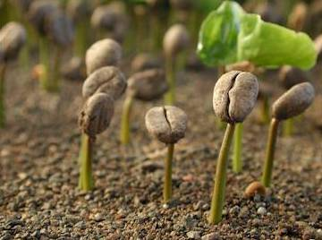

Growing Coffee Beans at Home
Coffee Plant Care
-
The coffee plant thrives under artificial plant lighting indoors.
The outside temperature in countries outside the Tropic belt is
too volatile and too cold to allow the tree to develop.
-
Water the tree twice per week in what is called a full watering
and a half watering. In a half watering, simply add some water to
the soil and allow it to drain. In a full watering, add water,
allow it to drain, and then add water with fertilizer and allow it
to drain. The key is to keep the soil most, but well drained.
-
After two or three years flowering and possibly cherries can be
expected, but do not expect high-quality coffee unless you are at
a high altitude and are monitoring the conditions of the
artificial microclimate carefully. In theory, it is feasible to
grow a high-quality coffee at home under the right conditions.
-
To spur flowering, wait until the beginning of winter and
significantly reduce watering for 2-3 months. When Spring begins
water the plant well, which should shock it into producing
flowers. From this point forward, water well and regularly.
Arabica coffee is self-fertilizing so you will not need to worry
about pollinating.
-
Once the cherries mature you can harvest, pulp, ferment, dry,
roast, and drink the coffee.